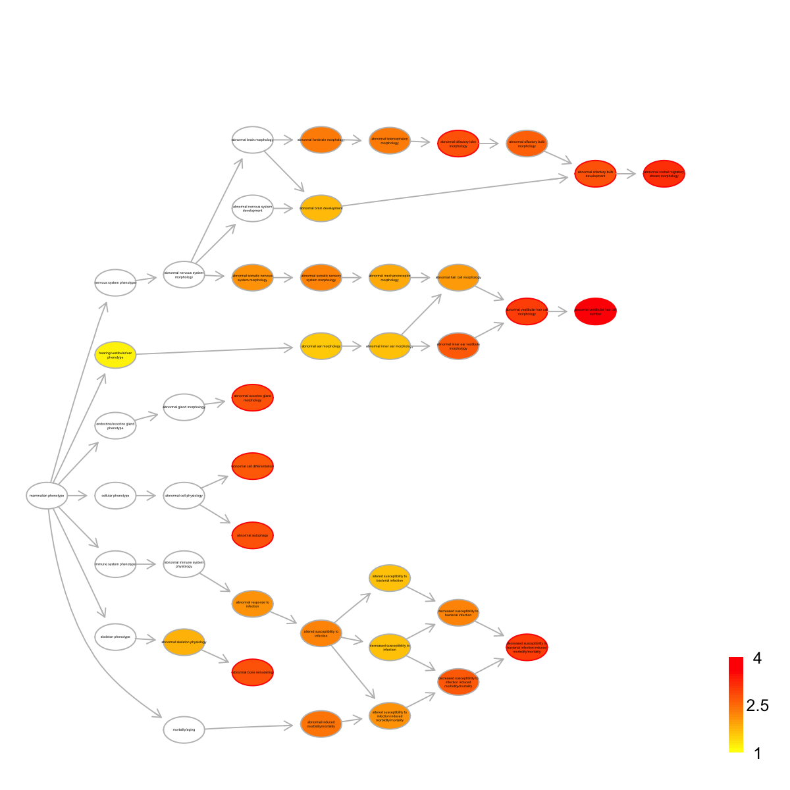
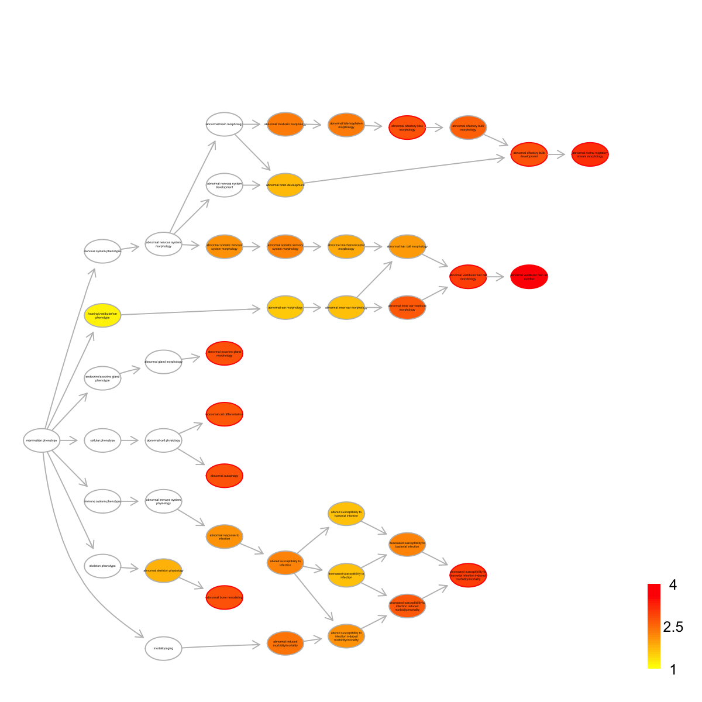

Demo for multilayer replication timing dataset
Notes:
# This is a demo for multilayer replication timing dataset from Hiratani et al
#
# This multilay omics dataset (available from http://www.ncbi.nlm.nih.gov/pubmed/19952138) involves genome-wide replication-timing profiles of 22 cell lines from early mouse embryogenesis. These cell lines can be categorised into: 1) pluripotent cells, including ESCs (ESC_46C, ESC_D3 and ESC_TT2) and iPSCs (iPSC, iPSC_1D4 and iPSC_2D4); 2) partially-reprogrammed iPSCs (piPSC_1A2, piPSC_1B3 and piPSC_V3); 3) early epiblast (EPL and EMB3_D3); 4) late epiblast (EpiSC5 and EpiSC7); 5) Ectoderm (EBM6_D3, EBM9_D3, NPC_46C and NPC_TT2); 6) Mesoderm and Endoderm; and 7) late Mesoderm (Myoblast, MEF_female and MEF_male).
#
# The dataset is extracted for RefSeq gene TSS locations, including:
## RT: a replication timing matrix of 17,292 genes X 22 samples;
## CpG: a matrix of 17,292 genes X 1 containing gene additional information on promoter CpG classification (see http://www.ncbi.nlm.nih.gov/pubmed/17603471), with '1' for HCP (high CpG density promoters), '-1' for LCP (low CpG density promoters), '0' for ICP (intermediate CpG density promoters), and 'NA' for unclassified;
## EX: an expression matrix of 17,292 genes X 8 samples, and samples include pluripotent cells (ESC_D3); early epiblast (EMB3_D3); late epiblast (EpiSC7); Ectoderm (EBM6_D3 and EBM9_D3); Mesoderm and Endoderm.
###############################################################################
# Load this multilayer dataset
load(url("http://dnet.r-forge.r-project.org/data/Datasets/Hiratani_TableS1.RData"))
ls() # you should see three variables: 'RT', 'CpG' and 'EX'
[1] "CpG" "EX" "RT"
# Load the package 'dnet'
library(dnet)
# Load or/and install packages "affy" and "limma" that are specifically used in this demo
list.pkg <- c("affy","limma")
for(pkg in list.pkg){
if(!require(pkg, character.only=T)){
install.packages(pkg,repos="http://www.stats.bris.ac.uk/R",dependencies=TRUE)
lapply(pkg, library, character.only=T)
}
}
# Here, we are interested to analyse replication timing data and their difference between different sample groups
# To this end, it is better to create the 'eset' object including sample grouping indication information
group <- c(rep("ESC",3), rep("iPSC",3), rep("eEpiblast",2), rep("lEpiblast",2), rep("Ectoderm",4), rep("Mesoderm",1), rep("Endoderm",1), rep("piPSC",3), rep("Myoblast",3))
pdata <- data.frame(group=group, row.names=colnames(RT))
esetGene <- new("ExpressionSet", exprs=as.matrix(RT), phenoData=as(pdata,"AnnotatedDataFrame"))
esetGene
ExpressionSet (storageMode: lockedEnvironment)
assayData: 17292 features, 22 samples
element names: exprs
protocolData: none
phenoData
sampleNames: ESC_46C ESC_D3 ... Myoblast (22 total)
varLabels: group
varMetadata: labelDescription
featureData: none
experimentData: use 'experimentData(object)'
Annotation:
# Look at the samples and their groups belonging to
pData(esetGene)
group
ESC_46C ESC
ESC_D3 ESC
ESC_TT2 ESC
iPSC iPSC
iPSC_1D4 iPSC
iPSC_2D4 iPSC
EPL eEpiblast
EBM3_D3 eEpiblast
EpiSC5 lEpiblast
EpiSC7 lEpiblast
EBM6_D3 Ectoderm
NPC_46C Ectoderm
NPC_TT2 Ectoderm
EBM9_D3 Ectoderm
Mesoderm Mesoderm
Endoderm Endoderm
piPSC_1A2 piPSC
piPSC_1B3 piPSC
piPSC_V3 piPSC
MEF_female Myoblast
MEF_male Myoblast
Myoblast Myoblast
# Now, load the gene network in mouse
# As part of dnet package, this network has been prepared and stored as an igraph object
# The network is extracted from the STRING database (version 9.1). Only those associations with medium confidence (score>=0.4) are retained.
load(url("http://dnet.r-forge.r-project.org/data/Mm/org.Mm.string.RData"))
org.Mm.string
IGRAPH UN-- 17671 407978 --
+ attr: name (v/c), seqid (v/c), geneid (v/n), symbol (v/c),
description (v/c), neighborhood_score (e/n), fusion_score (e/n),
cooccurence_score (e/n), coexpression_score (e/n), experimental_score
(e/n), database_score (e/n), textmining_score (e/n), combined_score
(e/n)
# Look at the first node information (gene symbols)
V(org.Mm.string)$symbol[1:5]
[1] "Arf2" "Gabrb2" "Hspa1b" "Tarsl2" "Fam134b"
# Focus on the part of 'org.Mm.string' that only contains genes in 'esetGene'
ind <- match(V(org.Mm.string)$symbol, rownames(esetGene))
## this part of 'org.Mm.string' is called 'network'
nodes_mapped <- V(org.Mm.string)$name[!is.na(ind)]
network <- dNetInduce(g=org.Mm.string, nodes_query=nodes_mapped, knn=0, remove.loops=T, largest.comp=T)
V(network)$name <- V(network)$symbol
network
IGRAPH UN-- 13062 290589 --
+ attr: name (v/c), seqid (v/c), geneid (v/n), symbol (v/c),
description (v/c)
# Identification of gene-active subnetwork
# 1) obtain the information associated with nodes/genes, such as the p-value significance as node information
# Here, we use the package 'limma' to identify differential Replication timing
## define the design matrix in an order manner
all <- as.vector(pData(esetGene)$group)
level <- levels(factor(all))
index_level <- sapply(level, function(x) which(all==x)[1])
level_sorted <- all[sort(index_level, decreasing=F)]
design <- sapply(level_sorted, function(x) as.numeric(all==x)) # Convert a factor column to multiple boolean columns
design
ESC iPSC eEpiblast lEpiblast Ectoderm Mesoderm Endoderm piPSC Myoblast
[1,] 1 0 0 0 0 0 0 0 0
[2,] 1 0 0 0 0 0 0 0 0
[3,] 1 0 0 0 0 0 0 0 0
[4,] 0 1 0 0 0 0 0 0 0
[5,] 0 1 0 0 0 0 0 0 0
[6,] 0 1 0 0 0 0 0 0 0
[7,] 0 0 1 0 0 0 0 0 0
[8,] 0 0 1 0 0 0 0 0 0
[9,] 0 0 0 1 0 0 0 0 0
[10,] 0 0 0 1 0 0 0 0 0
[11,] 0 0 0 0 1 0 0 0 0
[12,] 0 0 0 0 1 0 0 0 0
[13,] 0 0 0 0 1 0 0 0 0
[14,] 0 0 0 0 1 0 0 0 0
[15,] 0 0 0 0 0 1 0 0 0
[16,] 0 0 0 0 0 0 1 0 0
[17,] 0 0 0 0 0 0 0 1 0
[18,] 0 0 0 0 0 0 0 1 0
[19,] 0 0 0 0 0 0 0 1 0
[20,] 0 0 0 0 0 0 0 0 1
[21,] 0 0 0 0 0 0 0 0 1
[22,] 0 0 0 0 0 0 0 0 1
## define a contrast matrix: the pairwise comparisons of sample groups
contrasts <- dContrast(level_sorted, contrast.type="pairwise")
contrast.matrix <- makeContrasts(contrasts=contrasts$each, levels=design)
colnames(contrast.matrix) <- contrasts$name
colnames(contrast.matrix)
[1] "iPSC_ESC" "eEpiblast_ESC" "lEpiblast_ESC"
[4] "Ectoderm_ESC" "Mesoderm_ESC" "Endoderm_ESC"
[7] "piPSC_ESC" "Myoblast_ESC" "eEpiblast_iPSC"
[10] "lEpiblast_iPSC" "Ectoderm_iPSC" "Mesoderm_iPSC"
[13] "Endoderm_iPSC" "piPSC_iPSC" "Myoblast_iPSC"
[16] "lEpiblast_eEpiblast" "Ectoderm_eEpiblast" "Mesoderm_eEpiblast"
[19] "Endoderm_eEpiblast" "piPSC_eEpiblast" "Myoblast_eEpiblast"
[22] "Ectoderm_lEpiblast" "Mesoderm_lEpiblast" "Endoderm_lEpiblast"
[25] "piPSC_lEpiblast" "Myoblast_lEpiblast" "Mesoderm_Ectoderm"
[28] "Endoderm_Ectoderm" "piPSC_Ectoderm" "Myoblast_Ectoderm"
[31] "Endoderm_Mesoderm" "piPSC_Mesoderm" "Myoblast_Mesoderm"
[34] "piPSC_Endoderm" "Myoblast_Endoderm" "Myoblast_piPSC"
## a linear model is fitted for every gene by the function lmFit
fit <- lmFit(exprs(esetGene), design)
## computes moderated t-statistics and log-odds of differential expression by empirical Bayes shrinkage of the standard errors towards a common value
fit2 <- contrasts.fit(fit, contrast.matrix)
fit2 <- eBayes(fit2)
## for p-value
pvals <- as.matrix(fit2$p.value)
## for adjusted p-value
adjpvals <- sapply(1:ncol(pvals),function(x) {
p.adjust(pvals[,x], method="BH")
})
colnames(adjpvals) <- colnames(pvals)
## num of differentially expressed genes
apply(adjpvals<1e-2, 2, sum)
iPSC_ESC eEpiblast_ESC lEpiblast_ESC Ectoderm_ESC
0 102 1134 2120
Mesoderm_ESC Endoderm_ESC piPSC_ESC Myoblast_ESC
1050 959 2612 4171
eEpiblast_iPSC lEpiblast_iPSC Ectoderm_iPSC Mesoderm_iPSC
116 1224 2660 1147
Endoderm_iPSC piPSC_iPSC Myoblast_iPSC lEpiblast_eEpiblast
1167 2527 4862 91
Ectoderm_eEpiblast Mesoderm_eEpiblast Endoderm_eEpiblast piPSC_eEpiblast
563 95 106 1340
Myoblast_eEpiblast Ectoderm_lEpiblast Mesoderm_lEpiblast Endoderm_lEpiblast
2858 112 188 254
piPSC_lEpiblast Myoblast_lEpiblast Mesoderm_Ectoderm Endoderm_Ectoderm
1119 2736 118 346
piPSC_Ectoderm Myoblast_Ectoderm Endoderm_Mesoderm piPSC_Mesoderm
2373 2929 3 970
Myoblast_Mesoderm piPSC_Endoderm Myoblast_Endoderm Myoblast_piPSC
1362 1146 1773 2986
## only for the comparisons of piPSC against iPSC
my_contrast <- "piPSC_iPSC"
## get the p-values and calculate the scores thereupon
pval <- pvals[,my_contrast]
## look at the distribution of p-values
hist(pval)
 # 2) identification of gene-active subnetwork
## restrict the identified subnetwork to have the node size of 40 or so
g <- dNetPipeline(g=network, pval=pval, nsize=40)
Start at 2014-04-19 15:12:54
First, fit the p-value distribution under beta-uniform mixture model...
A total of p-values: 17292
Maximum Log-Likelihood: 17957.4
Mixture parameter (lambda): 0.412
Shape parameter (a): 0.218
Second, determine FDR threshold...
Via constraint on the size of subnetwork to be identified (40 nodes)
Scanning FDR at rough stage...
FDR: 1.00e-15, corresponding to the network size (0 nodes)
FDR: 1.00e-14, corresponding to the network size (0 nodes)
FDR: 1.00e-13, corresponding to the network size (0 nodes)
FDR: 1.00e-12, corresponding to the network size (0 nodes)
FDR: 1.00e-11, corresponding to the network size (0 nodes)
FDR: 1.00e-10, corresponding to the network size (1 nodes)
FDR: 1.00e-09, corresponding to the network size (1 nodes)
FDR: 1.00e-08, corresponding to the network size (2 nodes)
FDR: 1.00e-07, corresponding to the network size (11 nodes)
FDR: 1.00e-06, corresponding to the network size (59 nodes)
Scanning FDR at finetune stage...
FDR: 1.50e-07, corresponding to the network size (11 nodes)
FDR: 2.00e-07, corresponding to the network size (11 nodes)
FDR: 2.50e-07, corresponding to the network size (24 nodes)
FDR: 3.00e-07, corresponding to the network size (24 nodes)
FDR: 3.50e-07, corresponding to the network size (29 nodes)
FDR: 4.00e-07, corresponding to the network size (29 nodes)
FDR: 4.50e-07, corresponding to the network size (31 nodes)
FDR: 5.00e-07, corresponding to the network size (32 nodes)
FDR: 5.50e-07, corresponding to the network size (46 nodes)
FDR threshold: 5.50e-07
Third, calculate the scores according to the fitted BUM and FDR threshold (if any)...
Amongst 17292 scores, there are 188 positives.
Finally, find the subnetwork from the input network with 13062 nodes and 290589 edges...
Size of the module: 46 nodes and 61 edges
Finish at 2014-04-19 15:22:31
Runtime in total is: 577 secs
g
IGRAPH UN-- 46 61 --
+ attr: name (v/c), seqid (v/c), geneid (v/n), symbol (v/c),
description (v/c), score (v/n)
# 3) visualisation of the gene-active subnetwork itself
## the layout of the network visualisation (fixed in different visuals)
glayout <- layout.fruchterman.reingold(g)
## color nodes according to communities (identified via a spin-glass model and simulated annealing)
com <- spinglass.community(g, spins=25)
com$csize <- sapply(1:length(com),function(x) sum(com$membership==x))
vgroups <- com$membership
colormap <- "yellow-darkorange"
palette.name <- visColormap(colormap=colormap)
mcolors <- palette.name(length(com))
vcolors <- mcolors[vgroups]
com$significance <- dCommSignif(g, com)
## node sizes according to degrees
vdegrees <- igraph::degree(g)
## highlight different communities
mark.groups <- communities(com)
mark.col <- visColoralpha(mcolors, alpha=0.2)
mark.border <- visColoralpha(mcolors, alpha=0.2)
edge.color <- c("grey", "black")[crossing(com,g)+1]
## visualise the subnetwrok
visNet(g, glayout=glayout, vertex.label=V(g)$geneSymbol, vertex.color=vcolors, vertex.frame.color=vcolors, vertex.shape="sphere", mark.groups=mark.groups, mark.col=mark.col, mark.border=mark.border, mark.shape=1, mark.expand=10, edge.color=edge.color)
# 2) identification of gene-active subnetwork
## restrict the identified subnetwork to have the node size of 40 or so
g <- dNetPipeline(g=network, pval=pval, nsize=40)
Start at 2014-04-19 15:12:54
First, fit the p-value distribution under beta-uniform mixture model...
A total of p-values: 17292
Maximum Log-Likelihood: 17957.4
Mixture parameter (lambda): 0.412
Shape parameter (a): 0.218
Second, determine FDR threshold...
Via constraint on the size of subnetwork to be identified (40 nodes)
Scanning FDR at rough stage...
FDR: 1.00e-15, corresponding to the network size (0 nodes)
FDR: 1.00e-14, corresponding to the network size (0 nodes)
FDR: 1.00e-13, corresponding to the network size (0 nodes)
FDR: 1.00e-12, corresponding to the network size (0 nodes)
FDR: 1.00e-11, corresponding to the network size (0 nodes)
FDR: 1.00e-10, corresponding to the network size (1 nodes)
FDR: 1.00e-09, corresponding to the network size (1 nodes)
FDR: 1.00e-08, corresponding to the network size (2 nodes)
FDR: 1.00e-07, corresponding to the network size (11 nodes)
FDR: 1.00e-06, corresponding to the network size (59 nodes)
Scanning FDR at finetune stage...
FDR: 1.50e-07, corresponding to the network size (11 nodes)
FDR: 2.00e-07, corresponding to the network size (11 nodes)
FDR: 2.50e-07, corresponding to the network size (24 nodes)
FDR: 3.00e-07, corresponding to the network size (24 nodes)
FDR: 3.50e-07, corresponding to the network size (29 nodes)
FDR: 4.00e-07, corresponding to the network size (29 nodes)
FDR: 4.50e-07, corresponding to the network size (31 nodes)
FDR: 5.00e-07, corresponding to the network size (32 nodes)
FDR: 5.50e-07, corresponding to the network size (46 nodes)
FDR threshold: 5.50e-07
Third, calculate the scores according to the fitted BUM and FDR threshold (if any)...
Amongst 17292 scores, there are 188 positives.
Finally, find the subnetwork from the input network with 13062 nodes and 290589 edges...
Size of the module: 46 nodes and 61 edges
Finish at 2014-04-19 15:22:31
Runtime in total is: 577 secs
g
IGRAPH UN-- 46 61 --
+ attr: name (v/c), seqid (v/c), geneid (v/n), symbol (v/c),
description (v/c), score (v/n)
# 3) visualisation of the gene-active subnetwork itself
## the layout of the network visualisation (fixed in different visuals)
glayout <- layout.fruchterman.reingold(g)
## color nodes according to communities (identified via a spin-glass model and simulated annealing)
com <- spinglass.community(g, spins=25)
com$csize <- sapply(1:length(com),function(x) sum(com$membership==x))
vgroups <- com$membership
colormap <- "yellow-darkorange"
palette.name <- visColormap(colormap=colormap)
mcolors <- palette.name(length(com))
vcolors <- mcolors[vgroups]
com$significance <- dCommSignif(g, com)
## node sizes according to degrees
vdegrees <- igraph::degree(g)
## highlight different communities
mark.groups <- communities(com)
mark.col <- visColoralpha(mcolors, alpha=0.2)
mark.border <- visColoralpha(mcolors, alpha=0.2)
edge.color <- c("grey", "black")[crossing(com,g)+1]
## visualise the subnetwrok
visNet(g, glayout=glayout, vertex.label=V(g)$geneSymbol, vertex.color=vcolors, vertex.frame.color=vcolors, vertex.shape="sphere", mark.groups=mark.groups, mark.col=mark.col, mark.border=mark.border, mark.shape=1, mark.expand=10, edge.color=edge.color)
 # 4) visualisation of the gene-active subnetwork overlaid by the node/gene score
max_colorbar <- ceiling(quantile(abs(V(g)$score),0.75))
visNet(g, glayout=glayout, pattern=V(g)$score, zlim=c(-1*max_colorbar,max_colorbar), vertex.shape="circle")
# 4) visualisation of the gene-active subnetwork overlaid by the node/gene score
max_colorbar <- ceiling(quantile(abs(V(g)$score),0.75))
visNet(g, glayout=glayout, pattern=V(g)$score, zlim=c(-1*max_colorbar,max_colorbar), vertex.shape="circle")
 # 5) visualisation of the gene-active subnetwork overlaid by the differential replication timing
colormap <- "darkgreen-lightgreen-lightpink-darkred"
logFC <- fit2$coefficients[V(g)$name,my_contrast]
visNet(g, glayout=glayout, pattern=logFC, colormap=colormap, vertex.shape="circle")
# 5) visualisation of the gene-active subnetwork overlaid by the differential replication timing
colormap <- "darkgreen-lightgreen-lightpink-darkred"
logFC <- fit2$coefficients[V(g)$name,my_contrast]
visNet(g, glayout=glayout, pattern=logFC, colormap=colormap, vertex.shape="circle")
 # 6) Network-based sample classifications and visualisations on 2D sample landscape
# it uses the gene-active subnetwork overlaid by all replication timing data
data <- exprs(esetGene)[V(g)$name,]
sReorder <- dNetReorder(g, data, feature="edge", node.normalise="degree", amplifier=3, metric="none")
Start at 2014-04-19 15:22:38
First, define topology of a map grid...
Second, initialise the codebook matrix given a topology and input data...
Third, get training at the rough stage...
Fourth, get training at the finetune stage...
Next, identify the best-matching hexagon/rectangle for the input data...
Finally, append the response data (hits and mqe) into the sMap object...
Below are the summaries of the training results:
dimension of input data: 22x61
xy-dimension of map grid: xdim=9, ydim=9
grid lattice: rect
grid shape: sheet
dimension of grid coord: 81x2
initialisation method: linear
dimension of codebook matrix: 81x61
mean quantization error: 0.682658433371273
Below are the details of trainology:
training algorithm: sequential
alpha type: invert
training neighborhood kernel: gaussian
trainlength (x input data length): 37 at rough stage; 148 at finetune stage
radius (at rough stage): from 2 to 1
radius (at finetune stage): from 1 to 1
End at 2014-04-19 15:22:43
Runtime in total is: 5 secs
visNetReorder(g=g, data=data, sReorder=sReorder, height=ceiling(sqrt(ncol(data)))*2, newpage=T, glayout=glayout, colormap=colormap, vertex.label=NA,vertex.shape="sphere", vertex.size=16,mtext.cex=0.4,border.color="888888")
# 6) Network-based sample classifications and visualisations on 2D sample landscape
# it uses the gene-active subnetwork overlaid by all replication timing data
data <- exprs(esetGene)[V(g)$name,]
sReorder <- dNetReorder(g, data, feature="edge", node.normalise="degree", amplifier=3, metric="none")
Start at 2014-04-19 15:22:38
First, define topology of a map grid...
Second, initialise the codebook matrix given a topology and input data...
Third, get training at the rough stage...
Fourth, get training at the finetune stage...
Next, identify the best-matching hexagon/rectangle for the input data...
Finally, append the response data (hits and mqe) into the sMap object...
Below are the summaries of the training results:
dimension of input data: 22x61
xy-dimension of map grid: xdim=9, ydim=9
grid lattice: rect
grid shape: sheet
dimension of grid coord: 81x2
initialisation method: linear
dimension of codebook matrix: 81x61
mean quantization error: 0.682658433371273
Below are the details of trainology:
training algorithm: sequential
alpha type: invert
training neighborhood kernel: gaussian
trainlength (x input data length): 37 at rough stage; 148 at finetune stage
radius (at rough stage): from 2 to 1
radius (at finetune stage): from 1 to 1
End at 2014-04-19 15:22:43
Runtime in total is: 5 secs
visNetReorder(g=g, data=data, sReorder=sReorder, height=ceiling(sqrt(ncol(data)))*2, newpage=T, glayout=glayout, colormap=colormap, vertex.label=NA,vertex.shape="sphere", vertex.size=16,mtext.cex=0.4,border.color="888888")
 # 7) heatmap of replication timing data in the subnetwork
visHeatmapAdv(data, colormap=colormap, KeyValueName="log2(Early/Late)")
# 7) heatmap of replication timing data in the subnetwork
visHeatmapAdv(data, colormap=colormap, KeyValueName="log2(Early/Late)")
 # 8) output the subnetwork and their replication timing data
## Write the subnetwork into a SIF-formatted file (Simple Interaction File)
sif <- data.frame(source=get.edgelist(g)[,1], type="interaction", target=get.edgelist(g)[,2])
write.table(sif, file=paste(my_contrast,".sif", sep=""), quote=F, row.names=F,col.names=F,sep="\t")
## Output the corresponding replication timing data
hmap <- data.frame(Symbol=rownames(data), data)
write.table(hmap, file=paste(my_contrast,".txt", sep=""), quote=F, row.names=F,col.names=T,sep="\t")
# 9) enrichment analysis for genes in the subnetwork
## get a list of genes in the subnetwork
data <- V(g)$name
data
[1] "Cckar" "Rasl2-9" "Gng2" "Zfp369" "Zfp110" "Sdha"
[7] "Tnfaip3" "Col10a1" "Trp53" "Nt5dc1" "Ereg" "Cryz"
[13] "Ngfrap1" "Ibsp" "Bcl2" "Spg20" "Atoh1" "Mepe"
[19] "Cat" "Lig1" "Ubb" "Vim" "Slc1a2" "Plcb1"
[25] "Pdhx" "Uqcrb" "Itpr2" "Perp" "Sox2" "Cxcl5"
[31] "Serpinb5" "Klf4" "Wbp5" "Lrp2" "Runx2" "Spp1"
[37] "Tspyl1" "Akt1" "Areg" "Tbx3" "Btc" "Cd44"
[43] "Abcg2" "Dppa2" "Zfp42" "Grik3"
## 9a) GOBP enrichment analysis
eTerm <- dEnricher(data, identity="symbol", genome="Mm", ontology="GOBP")
Start at 2014-04-19 15:23:17
First, load the ontology GOBP and its gene associations in the genome Mm (2014-04-19 15:23:17) ...
Load Enterz Gene information from http://dnet.r-forge.r-project.org/data/Mm/org.Mm.eg.RData
Load annotation information from http://dnet.r-forge.r-project.org/data/Mm/org.Mm.egGOBP.RData
Then, do mapping based on symbol (2014-04-19 15:23:18) ...
Among 46 symbols of input data, there are 46 mappable via official gene symbols but 0 left unmappable
Third, perform enrichment analysis using HypergeoTest (2014-04-19 15:23:18) ...
There are 1830 terms being used, each restricted within [10,20000] annotations
Last, adjust the p-values using the BH method (2014-04-19 15:23:18) ...
End at 2014-04-19 15:23:19
Runtime in total is: 2 secs
## visualise the top significant terms in the GOBP heirarchy
## first, load the GOBP ontology
load(url("http://dnet.r-forge.r-project.org/data/Obo/ig.GOBP.RData"))
g <- ig.GOBP
## select the top most significant 10 terms
nodes_query <- names(sort(eTerm$adjp)[1:10])
nodes.highlight <- rep("red", length(nodes_query))
names(nodes.highlight) <- nodes_query
V(g)[nodes_query]$term_name
[1] "negative regulation of apoptotic process"
[2] "stem cell maintenance"
[3] "epidermal growth factor receptor signaling pathway"
[4] "cell aging"
[5] "negative regulation of smooth muscle cell proliferation"
[6] "neuron apoptotic process"
[7] "apoptotic process"
[8] "cerebral cortex development"
[9] "insulin-like growth factor receptor signaling pathway"
[10] "regulation of cell cycle"
## induce the shortest paths (one for each significant term) to the ontology root
subg <- dDAGinduce(g, nodes_query, path.mode="shortest_paths")
## color-code terms according to the adjust p-values (taking the form of 10-based negative logarithm)
visDAG(g=subg, data=-1*log10(eTerm$adjp[V(subg)$name]), node.info="both", node.attrs=list(color=nodes.highlight))
# 8) output the subnetwork and their replication timing data
## Write the subnetwork into a SIF-formatted file (Simple Interaction File)
sif <- data.frame(source=get.edgelist(g)[,1], type="interaction", target=get.edgelist(g)[,2])
write.table(sif, file=paste(my_contrast,".sif", sep=""), quote=F, row.names=F,col.names=F,sep="\t")
## Output the corresponding replication timing data
hmap <- data.frame(Symbol=rownames(data), data)
write.table(hmap, file=paste(my_contrast,".txt", sep=""), quote=F, row.names=F,col.names=T,sep="\t")
# 9) enrichment analysis for genes in the subnetwork
## get a list of genes in the subnetwork
data <- V(g)$name
data
[1] "Cckar" "Rasl2-9" "Gng2" "Zfp369" "Zfp110" "Sdha"
[7] "Tnfaip3" "Col10a1" "Trp53" "Nt5dc1" "Ereg" "Cryz"
[13] "Ngfrap1" "Ibsp" "Bcl2" "Spg20" "Atoh1" "Mepe"
[19] "Cat" "Lig1" "Ubb" "Vim" "Slc1a2" "Plcb1"
[25] "Pdhx" "Uqcrb" "Itpr2" "Perp" "Sox2" "Cxcl5"
[31] "Serpinb5" "Klf4" "Wbp5" "Lrp2" "Runx2" "Spp1"
[37] "Tspyl1" "Akt1" "Areg" "Tbx3" "Btc" "Cd44"
[43] "Abcg2" "Dppa2" "Zfp42" "Grik3"
## 9a) GOBP enrichment analysis
eTerm <- dEnricher(data, identity="symbol", genome="Mm", ontology="GOBP")
Start at 2014-04-19 15:23:17
First, load the ontology GOBP and its gene associations in the genome Mm (2014-04-19 15:23:17) ...
Load Enterz Gene information from http://dnet.r-forge.r-project.org/data/Mm/org.Mm.eg.RData
Load annotation information from http://dnet.r-forge.r-project.org/data/Mm/org.Mm.egGOBP.RData
Then, do mapping based on symbol (2014-04-19 15:23:18) ...
Among 46 symbols of input data, there are 46 mappable via official gene symbols but 0 left unmappable
Third, perform enrichment analysis using HypergeoTest (2014-04-19 15:23:18) ...
There are 1830 terms being used, each restricted within [10,20000] annotations
Last, adjust the p-values using the BH method (2014-04-19 15:23:18) ...
End at 2014-04-19 15:23:19
Runtime in total is: 2 secs
## visualise the top significant terms in the GOBP heirarchy
## first, load the GOBP ontology
load(url("http://dnet.r-forge.r-project.org/data/Obo/ig.GOBP.RData"))
g <- ig.GOBP
## select the top most significant 10 terms
nodes_query <- names(sort(eTerm$adjp)[1:10])
nodes.highlight <- rep("red", length(nodes_query))
names(nodes.highlight) <- nodes_query
V(g)[nodes_query]$term_name
[1] "negative regulation of apoptotic process"
[2] "stem cell maintenance"
[3] "epidermal growth factor receptor signaling pathway"
[4] "cell aging"
[5] "negative regulation of smooth muscle cell proliferation"
[6] "neuron apoptotic process"
[7] "apoptotic process"
[8] "cerebral cortex development"
[9] "insulin-like growth factor receptor signaling pathway"
[10] "regulation of cell cycle"
## induce the shortest paths (one for each significant term) to the ontology root
subg <- dDAGinduce(g, nodes_query, path.mode="shortest_paths")
## color-code terms according to the adjust p-values (taking the form of 10-based negative logarithm)
visDAG(g=subg, data=-1*log10(eTerm$adjp[V(subg)$name]), node.info="both", node.attrs=list(color=nodes.highlight))
 ## 9b) GOMF enrichment analysis
eTerm <- dEnricher(data, identity="symbol", genome="Mm", ontology="GOMF")
Start at 2014-04-19 15:23:23
First, load the ontology GOMF and its gene associations in the genome Mm (2014-04-19 15:23:23) ...
Load Enterz Gene information from http://dnet.r-forge.r-project.org/data/Mm/org.Mm.eg.RData
Load annotation information from http://dnet.r-forge.r-project.org/data/Mm/org.Mm.egGOMF.RData
Then, do mapping based on symbol (2014-04-19 15:23:25) ...
Among 46 symbols of input data, there are 46 mappable via official gene symbols but 0 left unmappable
Third, perform enrichment analysis using HypergeoTest (2014-04-19 15:23:25) ...
There are 634 terms being used, each restricted within [10,20000] annotations
Last, adjust the p-values using the BH method (2014-04-19 15:23:25) ...
End at 2014-04-19 15:23:25
Runtime in total is: 2 secs
## visualise the top significant terms in the GOMF heirarchy
## first, load the GOMF ontology
load(url("http://dnet.r-forge.r-project.org/data/Obo/ig.GOMF.RData"))
g <- ig.GOMF
## select the top most significant 10 terms
nodes_query <- names(sort(eTerm$adjp)[1:10])
nodes.highlight <- rep("red", length(nodes_query))
names(nodes.highlight) <- nodes_query
V(g)[nodes_query]$term_name
[1] "epidermal growth factor receptor binding"
[2] "protein phosphatase 2A binding"
[3] "RNA polymerase II core promoter proximal region sequence-specific DNA binding transcription factor a"
[4] "RNA polymerase II transcription factor binding"
[5] "sequence-specific DNA binding RNA polymerase II transcription factor activity"
[6] "transcription factor binding"
[7] "protease binding"
[8] "transcription regulatory region DNA binding"
[9] "DNA binding"
[10] "NADP binding"
## induce the shortest paths (one for each significant term) to the ontology root
subg <- dDAGinduce(g, nodes_query, path.mode="shortest_paths")
## color-code terms according to the adjust p-values (taking the form of 10-based negative logarithm)
visDAG(g=subg, data=-1*log10(eTerm$adjp[V(subg)$name]), node.info="both", node.attrs=list(color=nodes.highlight))
## 9b) GOMF enrichment analysis
eTerm <- dEnricher(data, identity="symbol", genome="Mm", ontology="GOMF")
Start at 2014-04-19 15:23:23
First, load the ontology GOMF and its gene associations in the genome Mm (2014-04-19 15:23:23) ...
Load Enterz Gene information from http://dnet.r-forge.r-project.org/data/Mm/org.Mm.eg.RData
Load annotation information from http://dnet.r-forge.r-project.org/data/Mm/org.Mm.egGOMF.RData
Then, do mapping based on symbol (2014-04-19 15:23:25) ...
Among 46 symbols of input data, there are 46 mappable via official gene symbols but 0 left unmappable
Third, perform enrichment analysis using HypergeoTest (2014-04-19 15:23:25) ...
There are 634 terms being used, each restricted within [10,20000] annotations
Last, adjust the p-values using the BH method (2014-04-19 15:23:25) ...
End at 2014-04-19 15:23:25
Runtime in total is: 2 secs
## visualise the top significant terms in the GOMF heirarchy
## first, load the GOMF ontology
load(url("http://dnet.r-forge.r-project.org/data/Obo/ig.GOMF.RData"))
g <- ig.GOMF
## select the top most significant 10 terms
nodes_query <- names(sort(eTerm$adjp)[1:10])
nodes.highlight <- rep("red", length(nodes_query))
names(nodes.highlight) <- nodes_query
V(g)[nodes_query]$term_name
[1] "epidermal growth factor receptor binding"
[2] "protein phosphatase 2A binding"
[3] "RNA polymerase II core promoter proximal region sequence-specific DNA binding transcription factor a"
[4] "RNA polymerase II transcription factor binding"
[5] "sequence-specific DNA binding RNA polymerase II transcription factor activity"
[6] "transcription factor binding"
[7] "protease binding"
[8] "transcription regulatory region DNA binding"
[9] "DNA binding"
[10] "NADP binding"
## induce the shortest paths (one for each significant term) to the ontology root
subg <- dDAGinduce(g, nodes_query, path.mode="shortest_paths")
## color-code terms according to the adjust p-values (taking the form of 10-based negative logarithm)
visDAG(g=subg, data=-1*log10(eTerm$adjp[V(subg)$name]), node.info="both", node.attrs=list(color=nodes.highlight))
 ## 9c) MP enrichment analysis
eTerm <- dEnricher(data, identity="symbol", genome="Mm", ontology="MP")
Start at 2014-04-19 15:23:28
First, load the ontology MP and its gene associations in the genome Mm (2014-04-19 15:23:28) ...
Load Enterz Gene information from http://dnet.r-forge.r-project.org/data/Mm/org.Mm.eg.RData
Load annotation information from http://dnet.r-forge.r-project.org/data/Mm/org.Mm.egMP.RData
Then, do mapping based on symbol (2014-04-19 15:23:30) ...
Among 46 symbols of input data, there are 46 mappable via official gene symbols but 0 left unmappable
Third, perform enrichment analysis using HypergeoTest (2014-04-19 15:23:30) ...
There are 4609 terms being used, each restricted within [10,20000] annotations
Last, adjust the p-values using the BH method (2014-04-19 15:23:33) ...
End at 2014-04-19 15:23:34
Runtime in total is: 6 secs
## visualise the top significant terms in the MP heirarchy
## first, load the MP ontology
load(url("http://dnet.r-forge.r-project.org/data/Obo/ig.MP.RData"))
g <- ig.MP
## select the top most significant 10 terms
nodes_query <- names(sort(eTerm$adjp)[1:10])
nodes.highlight <- rep("red", length(nodes_query))
names(nodes.highlight) <- nodes_query
V(g)[nodes_query]$term_name
[1] "abnormal gland morphology"
[2] "abnormal small intestine crypts of Lieberkuhn morphology"
[3] "abnormal bone mineralization"
[4] "endocrine/exocrine gland phenotype"
[5] "increased enterocyte apoptosis"
[6] "abnormal esophageal epithelium morphology"
[7] "abnormal trabecular bone morphology"
[8] "abnormal small intestine morphology"
[9] "abnormal postnatal growth/weight/body size"
[10] "abnormal bone remodeling"
## induce all possible paths to the ontology root
subg <- dDAGinduce(g, nodes_query)
## color-code terms according to the adjust p-values (taking the form of 10-based negative logarithm)
visDAG(g=subg, data=-1*log10(eTerm$adjp[V(subg)$name]), node.info=c("none","term_id","term_name","both","full_term_name")[5], layout.orientation=c("left_right","top_bottom","bottom_top","right_left")[1], node.attrs=list(color=nodes.highlight))
## 9c) MP enrichment analysis
eTerm <- dEnricher(data, identity="symbol", genome="Mm", ontology="MP")
Start at 2014-04-19 15:23:28
First, load the ontology MP and its gene associations in the genome Mm (2014-04-19 15:23:28) ...
Load Enterz Gene information from http://dnet.r-forge.r-project.org/data/Mm/org.Mm.eg.RData
Load annotation information from http://dnet.r-forge.r-project.org/data/Mm/org.Mm.egMP.RData
Then, do mapping based on symbol (2014-04-19 15:23:30) ...
Among 46 symbols of input data, there are 46 mappable via official gene symbols but 0 left unmappable
Third, perform enrichment analysis using HypergeoTest (2014-04-19 15:23:30) ...
There are 4609 terms being used, each restricted within [10,20000] annotations
Last, adjust the p-values using the BH method (2014-04-19 15:23:33) ...
End at 2014-04-19 15:23:34
Runtime in total is: 6 secs
## visualise the top significant terms in the MP heirarchy
## first, load the MP ontology
load(url("http://dnet.r-forge.r-project.org/data/Obo/ig.MP.RData"))
g <- ig.MP
## select the top most significant 10 terms
nodes_query <- names(sort(eTerm$adjp)[1:10])
nodes.highlight <- rep("red", length(nodes_query))
names(nodes.highlight) <- nodes_query
V(g)[nodes_query]$term_name
[1] "abnormal gland morphology"
[2] "abnormal small intestine crypts of Lieberkuhn morphology"
[3] "abnormal bone mineralization"
[4] "endocrine/exocrine gland phenotype"
[5] "increased enterocyte apoptosis"
[6] "abnormal esophageal epithelium morphology"
[7] "abnormal trabecular bone morphology"
[8] "abnormal small intestine morphology"
[9] "abnormal postnatal growth/weight/body size"
[10] "abnormal bone remodeling"
## induce all possible paths to the ontology root
subg <- dDAGinduce(g, nodes_query)
## color-code terms according to the adjust p-values (taking the form of 10-based negative logarithm)
visDAG(g=subg, data=-1*log10(eTerm$adjp[V(subg)$name]), node.info=c("none","term_id","term_name","both","full_term_name")[5], layout.orientation=c("left_right","top_bottom","bottom_top","right_left")[1], node.attrs=list(color=nodes.highlight))
 ## 9d) DO enrichment analysis
eTerm <- dEnricher(data, identity="symbol", genome="Mm", ontology="DO")
Start at 2014-04-19 15:23:38
First, load the ontology DO and its gene associations in the genome Mm (2014-04-19 15:23:38) ...
Load Enterz Gene information from http://dnet.r-forge.r-project.org/data/Mm/org.Mm.eg.RData
Load annotation information from http://dnet.r-forge.r-project.org/data/Mm/org.Mm.egDO.RData
Then, do mapping based on symbol (2014-04-19 15:23:39) ...
Among 46 symbols of input data, there are 46 mappable via official gene symbols but 0 left unmappable
Third, perform enrichment analysis using HypergeoTest (2014-04-19 15:23:40) ...
There are 924 terms being used, each restricted within [10,20000] annotations
Last, adjust the p-values using the BH method (2014-04-19 15:23:40) ...
End at 2014-04-19 15:23:40
Runtime in total is: 2 secs
## visualise the top significant terms in the DO heirarchy
## first, load the DO ontology
load(url("http://dnet.r-forge.r-project.org/data/Obo/ig.DO.RData"))
g <- ig.DO
## select the top most significant 10 terms
nodes_query <- names(sort(eTerm$adjp)[1:10])
nodes.highlight <- rep("red", length(nodes_query))
names(nodes.highlight) <- nodes_query
V(g)[nodes_query]$term_name
[1] "stomach cancer" "gastric adenocarcinoma"
[3] "seminoma" "stomach carcinoma"
[5] "keratoacanthoma" "germinoma"
[7] "pharynx cancer" "connective tissue cancer"
[9] "lichen disease" "lichen planus"
## induce all possible shortest paths to the ontology root
subg <- dDAGinduce(g, nodes_query)
## color-code terms according to the adjust p-values (taking the form of 10-based negative logarithm)
visDAG(g=subg, data=-1*log10(eTerm$adjp[V(subg)$name]), node.info="both", zlim=c(0,4), node.attrs=list(color=nodes.highlight))

## 9e) PS enrichment analysis
eTerm <- dEnricher(data, identity="symbol", genome="Mm", ontology="PS")
Start at 2014-04-19 15:23:43
First, load the ontology PS and its gene associations in the genome Mm (2014-04-19 15:23:43) ...
Load Enterz Gene information from http://dnet.r-forge.r-project.org/data/Mm/org.Mm.eg.RData
Load annotation information from http://dnet.r-forge.r-project.org/data/Mm/org.Mm.egPS.RData
Then, do mapping based on symbol (2014-04-19 15:23:45) ...
Among 46 symbols of input data, there are 46 mappable via official gene symbols but 0 left unmappable
Third, perform enrichment analysis using HypergeoTest (2014-04-19 15:23:45) ...
There are 27 terms being used, each restricted within [10,20000] annotations
Last, adjust the p-values using the BH method (2014-04-19 15:23:45) ...
End at 2014-04-19 15:23:45
Runtime in total is: 2 secs
## Loot at the evolution relevance along the path to the eukaryotic common ancestor
cbind(eTerm$set_info[,2:3], nSet=sapply(eTerm$gs,length), zscore=eTerm$zscore, pvalue=eTerm$pvalue, adjp=eTerm$adjp)
name namespace nSet zscore pvalue adjp
3 2759:Eukaryota superkingdom 8213 -2.1700 0.98000 0.980
4 33154:Opisthokonta no rank 2436 2.1500 0.01300 0.091
5 33154:Opisthokonta no rank 458 0.8030 0.11000 0.290
6 33154:Opisthokonta no rank 139 -0.5950 0.30000 0.400
7 33154:Opisthokonta no rank 173 0.8620 0.07000 0.210
8 33154:Opisthokonta no rank 169 -0.6560 0.35000 0.430
9 33208:Metazoa kingdom 106 -0.5190 0.24000 0.360
10 33208:Metazoa kingdom 123 3.0600 0.00360 0.049
11 33208:Metazoa kingdom 371 0.0702 0.24000 0.360
12 6072:Eumetazoa no rank 326 -0.9170 0.56000 0.590
13 6072:Eumetazoa no rank 123 1.2500 0.03800 0.150
14 33213:Bilateria no rank 273 -0.8370 0.50000 0.540
15 33213:Bilateria no rank 122 -0.5570 0.27000 0.380
16 33511:Deuterostomia no rank 583 -0.3930 0.43000 0.490
17 33511:Deuterostomia no rank 91 1.6200 0.02200 0.120
18 7711:Chordata phylum 73 -0.4300 0.17000 0.350
19 7742:Vertebrata no rank 107 -0.5210 0.24000 0.360
20 117571:Euteleostomi no rank 575 -0.3790 0.43000 0.490
21 8287:Sarcopterygii no rank 74 -0.4330 0.17000 0.350
22 32523:Tetrapoda no rank 92 -0.4830 0.21000 0.360
23 32524:Amniota no rank 170 -0.6580 0.35000 0.430
24 40674:Mammalia class 21 -0.2300 0.05200 0.170
25 32525:Theria no rank 88 -0.4720 0.20000 0.360
26 9347:Eutheria no rank 65 -0.4060 0.15000 0.350
27 1437010:Boreoeutheria no rank 57 4.9200 0.00039 0.011
29 314147:Glires no rank 16 -0.2010 0.04000 0.150
75 10090:Mus musculus species 64 2.1000 0.01100 0.091
## 9d) DO enrichment analysis
eTerm <- dEnricher(data, identity="symbol", genome="Mm", ontology="DO")
Start at 2014-04-19 15:23:38
First, load the ontology DO and its gene associations in the genome Mm (2014-04-19 15:23:38) ...
Load Enterz Gene information from http://dnet.r-forge.r-project.org/data/Mm/org.Mm.eg.RData
Load annotation information from http://dnet.r-forge.r-project.org/data/Mm/org.Mm.egDO.RData
Then, do mapping based on symbol (2014-04-19 15:23:39) ...
Among 46 symbols of input data, there are 46 mappable via official gene symbols but 0 left unmappable
Third, perform enrichment analysis using HypergeoTest (2014-04-19 15:23:40) ...
There are 924 terms being used, each restricted within [10,20000] annotations
Last, adjust the p-values using the BH method (2014-04-19 15:23:40) ...
End at 2014-04-19 15:23:40
Runtime in total is: 2 secs
## visualise the top significant terms in the DO heirarchy
## first, load the DO ontology
load(url("http://dnet.r-forge.r-project.org/data/Obo/ig.DO.RData"))
g <- ig.DO
## select the top most significant 10 terms
nodes_query <- names(sort(eTerm$adjp)[1:10])
nodes.highlight <- rep("red", length(nodes_query))
names(nodes.highlight) <- nodes_query
V(g)[nodes_query]$term_name
[1] "stomach cancer" "gastric adenocarcinoma"
[3] "seminoma" "stomach carcinoma"
[5] "keratoacanthoma" "germinoma"
[7] "pharynx cancer" "connective tissue cancer"
[9] "lichen disease" "lichen planus"
## induce all possible shortest paths to the ontology root
subg <- dDAGinduce(g, nodes_query)
## color-code terms according to the adjust p-values (taking the form of 10-based negative logarithm)
visDAG(g=subg, data=-1*log10(eTerm$adjp[V(subg)$name]), node.info="both", zlim=c(0,4), node.attrs=list(color=nodes.highlight))

## 9e) PS enrichment analysis
eTerm <- dEnricher(data, identity="symbol", genome="Mm", ontology="PS")
Start at 2014-04-19 15:23:43
First, load the ontology PS and its gene associations in the genome Mm (2014-04-19 15:23:43) ...
Load Enterz Gene information from http://dnet.r-forge.r-project.org/data/Mm/org.Mm.eg.RData
Load annotation information from http://dnet.r-forge.r-project.org/data/Mm/org.Mm.egPS.RData
Then, do mapping based on symbol (2014-04-19 15:23:45) ...
Among 46 symbols of input data, there are 46 mappable via official gene symbols but 0 left unmappable
Third, perform enrichment analysis using HypergeoTest (2014-04-19 15:23:45) ...
There are 27 terms being used, each restricted within [10,20000] annotations
Last, adjust the p-values using the BH method (2014-04-19 15:23:45) ...
End at 2014-04-19 15:23:45
Runtime in total is: 2 secs
## Loot at the evolution relevance along the path to the eukaryotic common ancestor
cbind(eTerm$set_info[,2:3], nSet=sapply(eTerm$gs,length), zscore=eTerm$zscore, pvalue=eTerm$pvalue, adjp=eTerm$adjp)
name namespace nSet zscore pvalue adjp
3 2759:Eukaryota superkingdom 8213 -2.1700 0.98000 0.980
4 33154:Opisthokonta no rank 2436 2.1500 0.01300 0.091
5 33154:Opisthokonta no rank 458 0.8030 0.11000 0.290
6 33154:Opisthokonta no rank 139 -0.5950 0.30000 0.400
7 33154:Opisthokonta no rank 173 0.8620 0.07000 0.210
8 33154:Opisthokonta no rank 169 -0.6560 0.35000 0.430
9 33208:Metazoa kingdom 106 -0.5190 0.24000 0.360
10 33208:Metazoa kingdom 123 3.0600 0.00360 0.049
11 33208:Metazoa kingdom 371 0.0702 0.24000 0.360
12 6072:Eumetazoa no rank 326 -0.9170 0.56000 0.590
13 6072:Eumetazoa no rank 123 1.2500 0.03800 0.150
14 33213:Bilateria no rank 273 -0.8370 0.50000 0.540
15 33213:Bilateria no rank 122 -0.5570 0.27000 0.380
16 33511:Deuterostomia no rank 583 -0.3930 0.43000 0.490
17 33511:Deuterostomia no rank 91 1.6200 0.02200 0.120
18 7711:Chordata phylum 73 -0.4300 0.17000 0.350
19 7742:Vertebrata no rank 107 -0.5210 0.24000 0.360
20 117571:Euteleostomi no rank 575 -0.3790 0.43000 0.490
21 8287:Sarcopterygii no rank 74 -0.4330 0.17000 0.350
22 32523:Tetrapoda no rank 92 -0.4830 0.21000 0.360
23 32524:Amniota no rank 170 -0.6580 0.35000 0.430
24 40674:Mammalia class 21 -0.2300 0.05200 0.170
25 32525:Theria no rank 88 -0.4720 0.20000 0.360
26 9347:Eutheria no rank 65 -0.4060 0.15000 0.350
27 1437010:Boreoeutheria no rank 57 4.9200 0.00039 0.011
29 314147:Glires no rank 16 -0.2010 0.04000 0.150
75 10090:Mus musculus species 64 2.1000 0.01100 0.091
)
)
)
)
)
)
)
)
)
){kind=link}
Functions used in this demo
- dNetInduce
- dContrast
- dNetPipeline
- dCommSignif
- visNet
- dNetReorder
- visNetReorder
- dEnricher
- dDAGinduce
- visDAG
Citation
Fang H, Gough J. (2014) DNET: dynamic networks via integrative analysis of digitised data in terms of network, ontology and evolution. R package version 1.0.1. http://dnet.r-forge.r-project.org